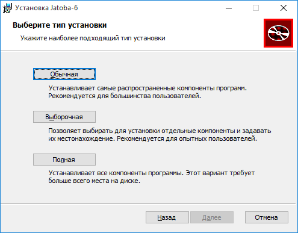
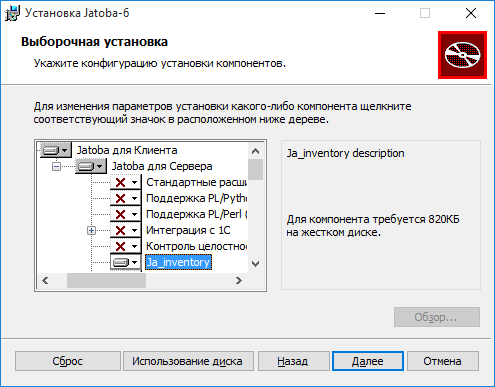
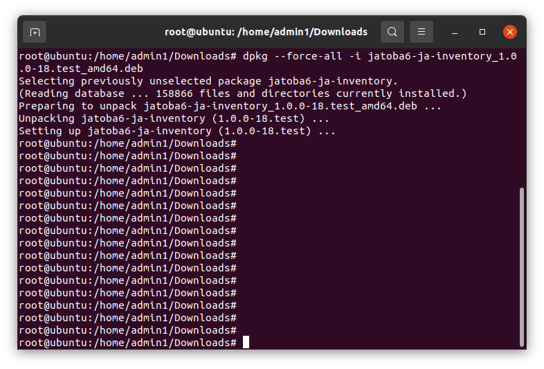
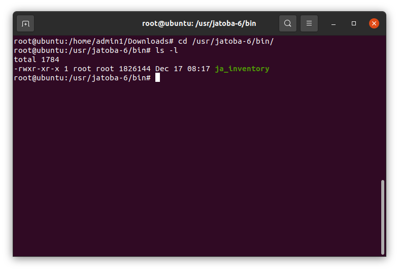
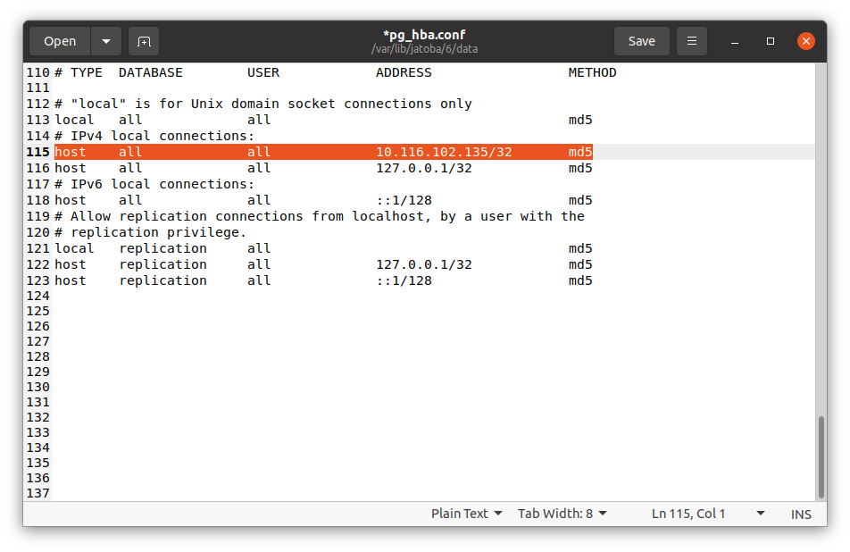
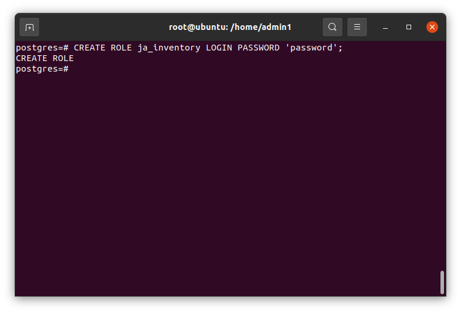
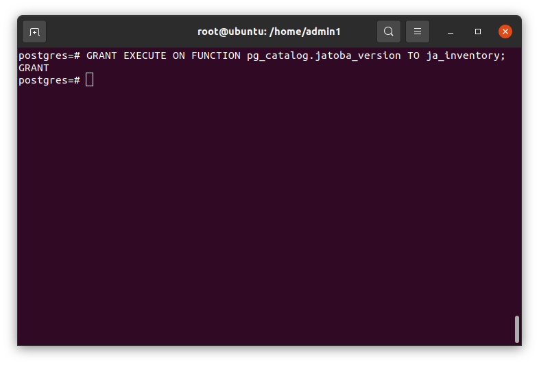
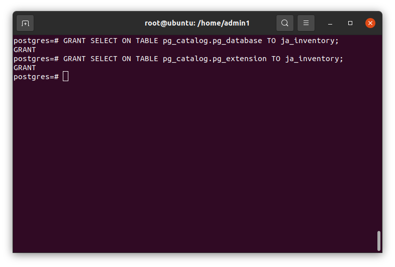
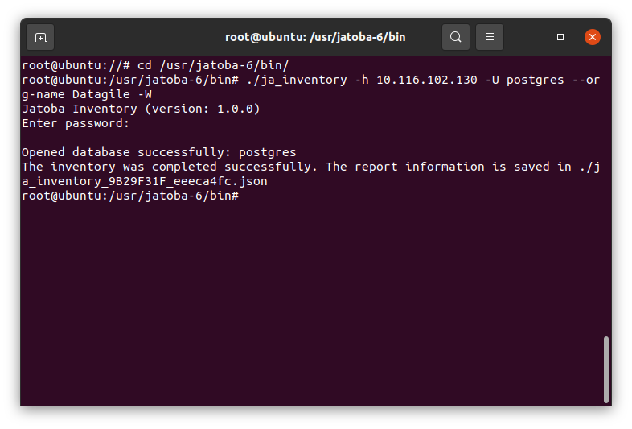
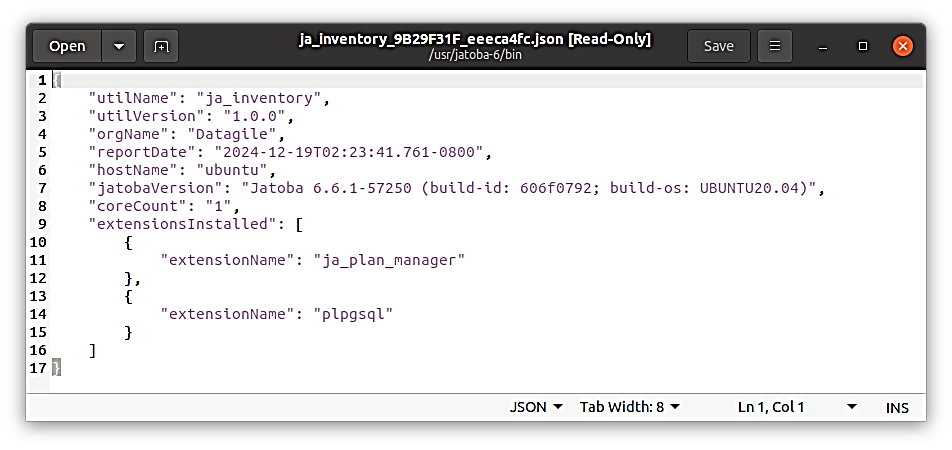

import Tabs from '@theme/Tabs'; import TabItem from '@theme/TabItem'; import TOCInline from '@theme/TOCInline';
УТВЕРЖДЕН 643.72410666.00067-07 98 01-ЛУ | |
|---|---|
ЗАЩИЩЕННАЯ СИСТЕМА УПРАВЛЕНИЯ Руководство по настройке. Часть 23. | |
| 643.72410666.00067-07 98 01-23 | |
| Листов 17 | |
| 2025 | |
| Литера О1 | |
АННОТАЦИЯ
В документе приведены сведения, необходимые для установки и эксплуатации компонента «ja_Inventory» (далее по тексту – «компонент» или ja_inventory), предназначенного для формирования файла отчета об установленной СУБД «Jatoba».
Настоящее руководство предназначено для администраторов СУБД.
 | Все примеры в данном документе приведены для СУБД «Jatoba» версии ядра 6.x, для других версий все шаги выполняются аналогично, разница состоит в именах директорий. Например, СУБД «Jatoba» версии 4.x по умолчанию устанавливается в директорию: ОС Windows – «C:\Program Files\GIS\Jatoba\4\bin»;ОС Linux – «/usr/jatoba-4/bin».Версия компонента — 1.0 |
|---|
Степени важности примечаний, применяемые в документе:
| <img src="images/media/image2.png"
| style="width:0.25139in;height:0.25139in" /> | Важная информация – указания, требующие особого внимания |
|---|
| <img src="images/media/image1.png"
| style="width:0.25in;height:0.25in" /> | Дополнительная информация – указания, позволяющие упростить работу с изделием |
|---|
Важная информация Для сертифицированной версии СУБД «Jatoba» поддерживается работа только на ОС, указанных в формуляре на поставку! |
|---|
СОДЕРЖАНИЕ
[1. Назначение компонента 4](#назначение-компонента)
[1.1. Условия применения 4](#версии-субдколичествах-ядер-сервераиспользуемых-расширениях.условия-применения)
[2. Установка и настройка 5](#установка-и-настройка)
[2.1. Установка компонента «ja_Inventory» на ОС Windows 5](#установка-компонента-ja_inventory-на-ос-windows)
[2.2. Установка компонента «ja_Inventory» в ОС GNU/Linux 7](#установка-компонента-ja_inventory-в-ос-gnulinux)
[2.3. Настройка конфигурационного файла «pg_hba.conf» 8](#настройка-конфигурационного-файла-pg_hba.conf)
[3. Функциональные возможности компонента 10](#функциональные-возможности-компонента)
[3.1. Синтаксис команды подключения 10](#синтаксис-команды-подключения)
[3.2. Параметры подключения 10](#параметры-подключения)
[3.3. Права пользователя СУБД 10](#права-пользователя-субд)
[3.4. Пример подключения к целевой СУБД и получения отчета 13](#пример-подключения-к-целевой-субд-и-получения-отчета)
[4. Отчет в формате JSON 14](#отчет-в-формате-json)
[Термины и определения 15](#_Toc208910807)
[Перечень сокращений 16](#_Toc208910808)
Назначение компонента
Компонент «ja_Inventory» предназначен для сбора на серверах Заказчика информации об установленных СУБД «Jatoba» в форме отчета в формате JSON. В отчет включается информация о:
версии СУБД;количествах ядер сервера;используемых расширениях.Условия применения
Компонент «ja_Inventory» может использоваться с СУБД «Jatoba» версий 4.x и выше, под управлением операционных систем Windows и GNU/Linux.
Компонент выполнен в форме внешней утилиты и не имеет ограничений по совместимости с другими компонентами.
Установка и настройка
Установка компонента должна производится от имени пользователя, обладающего административными привилегиями в системе.
Так как компонент выполнен в форме внешней утилиты, то для выполнения своих функциональных возможностей не требует установленной СУБД, но входит в дистрибутив. В силу этой особенности компонент возможно установить:
в составе СУБД (см. документ «Защищенная система управления базами данных «Jatoba». Руководство по установке);отдельно от СУБД.Данный компонент штатным образом может быть установлен только с СУБД «Jatoba».
Установка компонента под управлением ОС Windows и ОС GNU/Linux приведено ниже.
Установка компонента «ja_Inventory» на ОС Windows
В ОС Windows нет способа отдельной установки компонента, т.к. компонент включен в состав дистрибутива и устанавливается через инсталлятор.
Для установки компонента требуется выполнить следующие шаги:
в окне «Выбор типа установки» следует выбрать тип установки «Выборочная» (см. рис. Рисунок 2.1);

Рисунок . – Окно выбора типа установки
в окне «Выборочная установка», выбрать «ja_Inventory» (см. рис. Рисунок 2.2);Остальные компоненты при ненадобности доступно отключить.

Рисунок . – Выбор устанавливаемых компонент
в открывшемся окне «Все готово к установке Jatoba» запустить процесс установки, нажав кнопку «Установить» (см. рис. Рисунок 2.3);

Рисунок 2.3 – Окно «Все готово к установке Jatoba»
Установка компонента «ja_Inventory» в ОС GNU/Linux
Пакет компонента входит в состав дистрибутива, однако может функционировать, как в составе СУБД, так и на отдельном хосте. Поскольку выполнен в виде внешней утилиты.
Установка в составе СУБД описана в документе «Защищенная система управления базами данных «Jatoba». Руководство по установке.
Для функционирования компонента не требуется установка СУБД.
Установка на отдельном хосте без установки зависимостей
DEB пакета для ОС GNU/Linux выполняется командой:dpkg --force-all –i
Например
dpkg --force-all -i jatoba6-ja-inventory_1.0.0-18._amd64.deb

Рисунок . – Установка пакета компонента
RPM пакета для ОС GNU/Linux выполняется командой:rpm -i jatoba6-ja-inventory*.rpm --nodeps
В результате в каталоге СУБД будет находится единственный файл с утилитой.

Рисунок . – Содержание каталога СУБД
Удаление модуля осуществляется средствами пакетного менеджера ОС. Вместо команды install нужно использовать соответствующую данному пакетному менеджеру команду удаления (remove, purge, erase и т.п.).
Для получения детальной информации по пакетному менеджеру рекомендуется обратиться к документации по ОС.
Настройка конфигурационного файла «pg_hba.conf»
Для подключения компонента «ja_Inventory» к целевой СУБД «Jatoba» в конфигурационном файле «pg_hba.conf» должно быть разрешено подключение от конкретного IP-адреса или подсти.
host all all <the_first_computer_IP_address>/32 md5
В рассматриваемом примере:
компонента «ja_Inventory» находится на хосте с IP-адресом - 10.116.102.135;целевая СУБД находится на хосте с IP-адресом -10.116.102.130При разрешении подключения с конкретного IP-адреса, строка разрешения подключения может иметь вид, как представлено на рисунке Рисунок 2.6.

Рисунок . - Вид конфигурационного файла «pg_hba.conf»
Функциональные возможности компонента
Подключение к целевой СУБД компонентом «ja_Inventory» выполняется аналогично, подключению интерактивным терминалом psql и используется часть параметров подключения.
Синтаксис команды подключения
Применяется следующий синтаксис команды подключения:
ja_inventory {–n | --org-name } Datagile {–h | --host} IP-address {–U | --user} user_name {–d | --db_name} database {–o | --output-dir} /temp/db {–W|-w}
Параметры подключения
Компонент «ja_Inventory» использует параметры подключения приведенные в таблице Таблица 3.1. Используются типчные параметры подключения к СУБД и введены дополнительные.
Таблица . – Параметры подключения компонента
| Параметр | Описание | Уник-й пар-р | Обяз-й пар-р | |
|---|---|---|---|---|
| - h | --host | Хост СУБД | | X |
| -p | --port | Порт подключения | | |
| -d | --db_name | Название БД | | |
| -U | --user | Пользователь СУБД | | |
| –o | --output-dir | Директория сохранения файла отчета | X | |
| -W | Принудительный ввод пароля пользователя | | | |
| -w | Не запрашивать пароль. Если пароль требуется серверу, то будет ошибка: no password supplied | | | |
| –n | --org-name | Ввод имения организации | X | X |
Права пользователя СУБД
Файл отчета может быть получен от имени и с правами привилегированного пользователя СУБД (SUPERUSER). В этом случае не требуется дополнительных разрешений. Данный способ подключения менее трудозатратен, но не является безопасным.
Целесообразнее использовать специальную учетную запись в СУБД, наделив ее минимально достаточными привилегиями.
Такого пользователя и его привилегии Администратор СУБД должен создать самостоятельно. Набор привилегий такого пользователя должен распространяться на все БД в СУБД, в том числе права на подключение, а также включать следующее:
выделенный пользователь должен иметь атрибут LOGIN;CREATE ROLE ja_inventory LOGIN PASSWORD 'password';

Рисунок 3.1 – Создание пользователя
выделенный пользователь должен уметь запускать функцию jatoba_version и получать результаты выполнения этой функции;GRANT EXECUTE ON FUNCTION pg_catalog.jatoba_version TO ja_inventory;

Рисунок . – SQL- команда наделения правом пользователя на выполнение функции jatoba_version
| <img src="images/media/image1.png"
| style="width:0.25in;height:0.25in" /> | Разрешение применяется для всех БД |
|---|
выделенный пользователь должен уметь читать таблицу pg_database в схеме pg_catalog;выделенный пользователь должен уметь читать таблицу pg_extension в схеме pg_catalog;GRANT SELECT ON TABLE pg_catalog.pg_database TO ja_inventory;
| <img src="images/media/image1.png"
| style="width:0.25in;height:0.25in" /> | Разрешение применяется для всех БД |
|---|
GRANT SELECT ON TABLE pg_catalog.pg_extension TO ja_inventory;

Рисунок . – SQL – команды наделения правом пользователя на чтение таблиц
Пример подключения к целевой СУБД и получения отчета
Запуск компонента выполняется из каталога СУБД, для чего требуется перейти в него командой:
cd /usr/jatoba-6/bin/
Команда получения фала отчета выполняется от имени и с правами привилегированного пользователя ОС и имеет вид:
./ja_inventory -h 10.116.102.130 -U postgres --org-name Datagile –W

Рисунок . – Команда получения файла отчета
Компонент запросит пароль указанного в строке подключения пользователя и если не указана директория сохранения файла отчета, то он будет сохранен в текущей директории.
Отчет в формате JSON
Получаемый отчет имеет формат JSON с реквизитами и атрибутами приведенными в таблице Таблица 4.1.
Таблица . - Перечень реквизитов и атрибутов JSON
| Реквизит | Атрибут json |
|---|---|
| Название утилиты | utilName |
| Версия утилиты | utilVersion |
| Наименование организации | orgName |
| Дата формирования отчета | reportDate |
| Имя хоста | hostName |
| Версия Jatoba | jatobaVersion |
| Ядра | coreCount |
| Расширение | extensionName |
Отчет имеет вид представленный на рисунке Рисунок 4.1.

Рисунок . – Вид отчета о хосте
В процессе формирования отчета компонент:
формирует значения атрибутов, описанных выше;рассчитывает контрольную сумму (далее – КС) хеш-суммы по алгоритму CRC32.КС включается в имя файла отчета и не может быть изменена;Пример названия файла отчета:
ja_inventory_ABCDEF12_123456AB.json
Термины и определенияАдминистратор СУБД – субъект доступа, выполняющий административные функции в СУБД и наделенный правами:
создавать учетные записи пользователей системы управления базами данных;модифицировать, блокировать и удалять учетные записи пользователей системы управления базами данных;назначать права доступа пользователям системы управления базами данных к объектам доступа системы управления базами данных;управлять конфигурацией системы управления базами данных;создавать, подключать базы данных.Администратор СУБД имеет атрибут SUPERUSER и/или обладает системной учетной записью «postgres».
Целевая СУБД – СУБД являющаяся целью мониторинга.
Пользователь БД - субъект доступа, имеющий доступ к ограниченному перечню БД и объектов БД. Имеющий следующий набор привилегий:
создавать и манипулировать объектами доступа БД (таблица, запись или столбец, поле, представление и иные объекты доступа);выполнять процедуры (программный код), хранимые в БД.Пользователь БД имеет обязательный атрибут LOGIN.
| Перечень сокращенийSQL | – | Structured Query Language |
|---|---|---|
| БД | – | База данных |
| КС | – | Контрольные суммы |
| ОС | – | Операционная система |
| СУБД | – | Система управления базами данных |
| Лист регистрации изменений | |||||||||
|---|---|---|---|---|---|---|---|---|---|
| Изм. | Номера листов (страниц) | Всего листов (страниц) в документе | Номер документа | Входящий номер сопроводительного документа и дата | Подпись | Дата | |||
| измененных | замененных | новых | аннулированных | ||||||